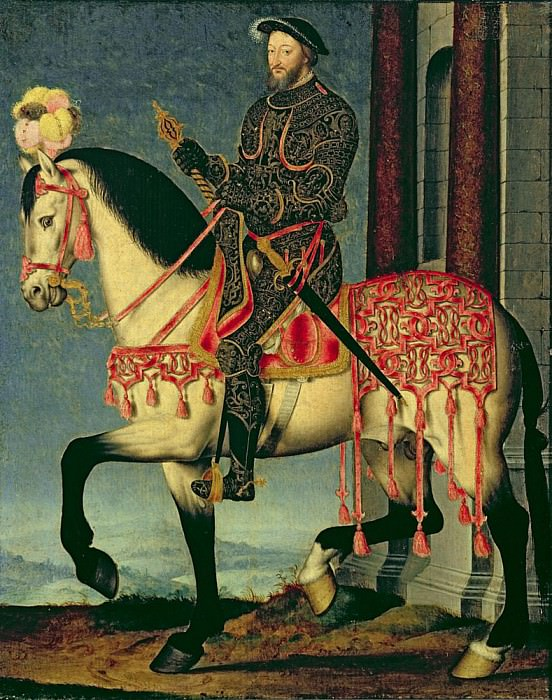

Картинная галерея портретов
 Женщина за шитьём
Женщина за шитьём

“Франциск |”
Верхом на коне с богато украшенной сбруей, облаченный в не менее роскошные доспехи, Франциск I смотрит на нас со слегка мечтательным выражением. Клуэ славился своей острой наблюдательностью и тонкостью в исполнении деталей. С поразительной точностью он передает узор королевского наряда, особенно изображения голов на наколенниках и локтях и фигур на рукавах и груди. Клуэ не только выражает почтение своему властелину, запечатлев его наряд со всей пышностью, но, поместив лошадь и всадника на вершину горы, за которой простирается пейзаж, он также напоминает о том, что король правил обширными владениями. Клуэ исполнил множество королевских портретов. Он был придворным художником у четырех французских королей - Франциска I, Генриха II, Франциска II и Карла IX - и завоевал громкую славу своими парадными портретами и великолепными рисунками.